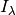
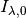
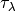
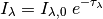
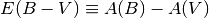
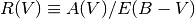
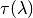
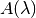
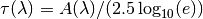

Barak’s Documentation¶
This package contains functions useful for scientific programming, with a focus on astronomical research. The documentation details everything that is available, but some example tasks that can be handled are:
- Calculate absorption profiles for various ions observed in astrophysical environments.
- Fit a smooth continuum to a spectrum with many emission or absorption features.
- Find the expected broad-band magnitudes given a spectral energy distribution.
The package can be downloaded here.
It requires NumPy, PyFits and ATpy to install. Matplotlib and SciPy are also required for full functionality.
To install, either download the tarball from the pypi website and then do:
python setup.py install
You may need to put a sudo in front of this.
A better way to install (which allows for easy uninstallation) is by using pip:
pip install barak
but you need to have pip installed.
To run the tests you need py.test installed. Then run:
py.test barak
from the barak/ directory.
Feel free to email me if you have any questions: neilcrighton .at. gmail .dot. com

absorb¶
This module has routines for analysing the absorption profiles from ions and molecules.
| T_to_b(atom, T) | Convert temperatures in K to b parameters (km/s) for an atom |
| b_to_T(atom, bvals) | Convert b parameters (km/s) to a temperature in K for an atom |
| calc_DLA_tau(wa[, z, logN, logZ, bHI, atom, ...]) | Create the optical depth due to absorption from a DLA. |
| calc_DLA_trans(wa, redshift, vfwhm[, logN, ...]) | Find the transmission after absorption by a DLA |
| calc_Wr(i0, i1, wa, tr[, ew, ewer, fl, er, ...]) | Find the rest equivalent width of a feature, and column density assuming optically thin. |
| calc_iontau(wa, ion, zp1, logN, b[, debug, ...]) | Returns tau values at each wavelength for transitions in ion. |
| calc_tau_peak(logN, b, wa0, osc) | Find the optical depth of a transition at line centre assuming we are on the linear part of the curve of growth. |
| calctau(vel, wa0, osc, gam, logN, b[, ...]) | Returns the optical depth (Voigt profile) for a transition. |
| find_tau(wa, lines, atom[, per_trans]) | Given a wavelength array, a reference atom.dat file read with readatom, and a list of lines giving the ion, redshift, log10(column density) and b parameter, return the tau at each wavelength from all these transitions. |
| findtrans(name, atomdat) | Given an ion and wavelength and list of transitions read with readatom(), return the best matching entry in atom.dat. |
| guess_logN_b(ion, wa0, osc, tau0) | Estimate logN and b for a transition given the peak optical |
| logN_from_tau_peak(tau, b, wa0, osc) | Calculate the column density for a transition given its width and its optical depth at line centre. |
| read_HITRAN([thelot]) | Return a list of molecular absorption features in the HITRAN |
| readatom([filename, debug, flat, molecules, ...]) | Reads atomic transition data from a vpfit-style atom.dat file. |
| split_trans_name(name) | Given a transition string (say MgII), return the name of the |
| tau_LL(logN, wa[, wstart]) | Find the optical depth at the neutral hydrogen Lyman limit. |
abundances¶
Abundances and condensation temperatures.
This contains the following two datasets:
- Asolar:
An ordered dictionary of abundances from Lodders 2003, ApJ, 591, 1220. It contains a value A for each element el, where A is defined:
A(el) = log10 n(el)/n(H) + 12
n(el) is the number density of atoms of that element, and n(H) is the number density of hydrogen.
- cond_temp:
An array of condensation temperatures for each element from the same reference. The condensation temperature is the temperature at which an element in a gaseous state attaches to dust grains.
It contains the values tc and tc50 for each element, where tc is the condensation temperature in K when condensation begins, and tc50 is the temperature when 50% of the element is left in a gaseous state.
| calc_abund(X, Y, logNX, logNY) | Find the abundance relative to solar given two elements and their column densities. |
constants¶
Useful physical and mathematical values. Physical constants in Gaussian cgs units when not indicated otherwise. From 2010 CODATA recommended values where available (see http://physics.nist.gov/cuu/Constants/index.html).
>>> import constants as c
>>> from math import sqrt
>>> Planck_length = sqrt(c.hbar * c.G / c.c**3) # cm
>>> Planck_mass = sqrt(c.hbar * c.c / c.G) # g
>>> Planck_time = sqrt(c.hbar * c.G / c.c**5) # s
Constants defined:
c 2.99792458e10 cm/s speed of light G 6.67384e-8 cm^3/g/s^2 gravitational constant hplanck 6.6260775e-27 erg s Planck’s constant hbar 1.054571726e-27 erg s 1/(4*pi) * Planck’s constant kboltz 1.3806488e-16 erg/K Boltzmann constant mp 1.67261777e-24 g proton mass me 9.10938291e-28 g electron mass eV 1.602176565e-12 ergs electron volt e 4.80320451e-10 esu magnitude of charge on electron sigma 5.670373e-5 erg/s/cm^2/K^4 Stefan-Boltzmann constant Ryd 2.179872171e-11 ergs Rydberg: energy needed to dissociate H atom from ground state Jy 1e-23 ergs/s/cm^2/Hz Jansky sigmaT 6.652458734e-25 cm^2 Thomson cross section Mmoon 7.348e25 g Moon mass Rmoon 1.7374e8 cm Moon radius Mearth 5.9742e27 g Earth mass Rearth 6.3781e8 cm Earth radius Msun 1.989e33 g Solar mass Lsun 3.90e33 erg/s Solar luminosity Rsun 6.96e10 cm Solar radius au 1.496e13 cm Distance from Earth to Sun ly 9.4607304725808e16 cm light year pc 3.08567802e18 cm parsec kpc 3.08567802e21 cm kiloparsec Mpc 3.08567802e24 cm megaparsec yr 3.155815e7 s year Gyr 3.155815e16 s gigayear mu 0.62 unitless mean molecular weight of astrophysical gas mile
cm mile a0 hbar**2 / me / e**2 cm Bohr radius alpha e**2 / (hbar*c) unitless Fine structure constant Ryd_Ang h * c * 1.0e8 / Ryd Angstroms Rydberg in Angstroms c_kms 2.99792458e5 km/s speed of light sqrt_ln2 0.832554611158 sqrt(ln(2)) pi wlya 1215.6701 Angstroms Wavelength of HI Lya transition wlyb 1025.72 Angstroms Wavelength of HI Lyb transition Ar dictionary of atomic weights
convolve¶
Functions related to convolution.
| convolve_constant_dv(wa, fl[, wa_dv, npix, ...]) | Convolve a wavelength array with a gaussian of constant velocity width. |
| convolve_psf(a, fwhm[, edge, replace_nan, debug]) | Convolve an array with a gaussian window. |
| convolve_window(a, window[, edge]) | Convolve an array with an arbitrary window. |
coord¶
Astronomical coordinate functions.
| ang_sep(ra1, dec1, ra2, dec2) | Returns the angular separation in degrees on the celestial |
| check_ra_dec(ra, dec) | Check 0 <= RA < 360 and -90 <= Dec <= 90. |
| dec2s(ra, dec) | Convert an RA and Dec from degrees to sexigesimal. |
| dec_dec2s(dec[, decformat]) | Converts decimal RA and Dec to sexigesimal. |
| dec_s2dec(dec) | Converts a sexigesimal Dec string to decimal. |
| distsq(ra1, dec1, ra2, dec2) | Find the distance squared in xyz space between two RAs and |
| distsq_to_radians(distsq) | Convert to an angle from a squared xyz separation. |
| indmatch(ra1, dec1, ra2, dec2, tol) | Finds objects in ra1, dec1 that have a matching object in ra2, dec2 within tol arcsec. |
| match(ra1, dec1, ra2, dec2, tol[, allmatches]) | Given two sets of numpy arrays of ra,dec and a tolerance tol, returns an array of indices and separations with the same length as the first input array. |
| ra_dec2s(ra[, raformat]) | |
| ra_s2dec(ra) | Converts a sexigesimal RA string to decimal. |
| radec_to_xyz(ra_deg, dec_deg) | Convert RA and Dec to xyz positions on a unit sphere. |
| radians_to_distsq(radians) | Convert to a squared xyz separation from an angle. |
| s2dec(ra, dec) | Convert a sexigesimal ra and dec (or list of ras and decs) to decimal degrees. |
| unique_radec(ra, dec, tol) | Find unique ras and decs in a list of coordinates. |
extinction¶
Tools for calculating dust attenuation.
How dust attentuation is expressed in this module
If  is the observed attenuated intensity of an object, and  is the unattenuated intensity modulated by an optical depth  due to dust particles, then:

Generally the attenuation is given in magnitudes in a band or at a wavelength. For example, A(V) refers to the extinction in magnitudes in the V band, and

is the difference in extinction between the B and V bands. Empirically, dust attenuation in different parts of the Milky Way’s ISM can be described by single function of wavelength parametrised by a normalisation A(V) and slope E(B - V). Another commonly used quantity is

Analytic approximations for dust attenuation curves are often calculated as a function of R(V), and then normalised by A(V) or E(B - V).
The functions in his module give the attenuation for the Milky Way, SMC and LMC, as a function of wavelength, and require that R(V) and E(B-V) are given. The attenuation is given as the optical depth, . This is related to  in the following way:

References
- ‘Astrophysics of Dust in Cold Clouds’ by B.T. Draine: http://arxiv.org/abs/astro-ph/0304488
- ‘Interstellar Dust Grains’ by B.T. Draine: http://arxiv.org/abs/astro-ph/0304489
Note that much of the code in this module is inspired by Erik Tollerud’s Astropysics.
| ExtinctionCurve(wa, Rv, AlamAv[, name, EBmV]) | |
| ExtinctionCurve.set_EBmV(EBmV) | Sets Av, tau and Alam in addition to EBmV |
| AlamAv_from_ElamV(ElamV, Rv) | Find A(lambda)/A(V) from E(lambda - V) / E(B - V). |
| ElamV_FM(wa, c1, c2, c3, c4, x0, gamma) | Base function for Extinction curves that use the form from |
| ElamV_from_AlamAv(AlamAv, Rv) | Find E(lambda - V) / E(B - V) from A(lambda)/A(V). |
| LMC2_Gordon03(wa) | LMC Extinction law from Gordon et al. 2003 LMC supershell |
| LMC_Gordon03(wa) | LMC Extinction law from Gordon et al. 2003 LMC Average Sample. |
| MW_Cardelli89(wa[, Rv]) | Milky Way Extinction law from Cardelli et al. 1989. |
| SMC_Gordon03(wa) | SMC Extinction law from Gordon et al. 2003 SMC Bar Sample. |
| starburst_Calzetti00(wa[, Rv]) | Dust extinction in starburst galaxies using the Calzetti |
| tau_from_AlamAv(AlamAv, Av) | Find tau(lambda) from A(lambda)/A(V) |
fitcont¶
Functions and Classes used to fit an estimate of an unabsorbed continuum to a QSO spectrum.
| InteractiveCoFit(wa, fl, er, contpoints[, ...]) | |
| InteractiveCoFit.modifypoints() | Add/remove continuum points. |
| InteractiveCoFit.on_button_release(event) | |
| InteractiveCoFit.on_keypress(event) | Add or remove a continuum point. |
| InteractiveCoFit.plotinit() | Set up the figure and do initial plots. |
| InteractiveCoFit.update() | Calculates the new continuum, residuals and updates the plots. |
| fitqsocont(wa, fl, er, redshift[, oldco, ...]) | Find an estimate of a QSO continuum. |
| spline_continuum(wa, fl, er, edges[, ...]) | Given a section of spectrum, fit a continuum to it very |
interp¶
Interpolation-related functions and classes.
| AkimaSpline(xvals, yvals) | A class used to generate an Akima Spline through a set of |
| CubicSpline(x, y[, firstderiv, lastderiv, ...]) | Class to generate a cubic spline through a set of points. |
| CubicSpline.set_d2([firstderiv, lastderiv, ...]) | Calculates the second derivative of a cubic spline function y = f(x) for each value in array x. |
| fit_spline(x, y[, bins, addknots, estimator]) | Find a smooth function that approximates x, y. |
| interp_Akima(x_new, x, y) | Return interpolated data using Akima’s method. |
| interp_spline(x, xvals, yvals[, nochecks]) | Like numpy.interp, but using spline instead of linear interpolation. |
| splice(co0, co1, i, j[, forced]) | Join two overlapping curves smoothly using a cubic spline. |
| trilinear_interp(x, y, z, xref, yref, zref, vals) | Trilinear interpolation. |
io¶
Functions to read and write text, fits and pickle files.
| loadobj(filename) | Load a python object pickled with saveobj. |
| parse_config(filename[, defaults]) | Read options for a configuration file. |
| readsex(filename[, catnum]) | Read a sextractor catalogue into a Numpy record array. |
| readtabfits(filename[, ext]) | Read fits binary table data, such as that written by writetabfits(). |
| readtxt(fh[, sep, usecols, comment, skip, ...]) | Reads columns from a text file into arrays, converting to int, float or str where appropriate. |
| saveobj(filename, obj[, overwrite]) | Save a python object to filename using pickle. |
| sex_to_DS9reg(filename, s[, colour, tag, ...]) | Write a DS9 region file from SExtractor output. |
| write_DS9reg(x, y[, filename, coord, ptype, ...]) | Write a region file for ds9 for a list of coordinates. |
| writetabfits(filename, rec[, units, overwrite]) | This is deprecated. |
| writetable(filename, cols[, units, names, ...]) | Write a series of data columns to a file. |
| writetxt(fh, cols[, sep, names, header, ...]) | This is deprecated. |
phot¶
Photometry-based tools.
| UBVRI_to_ugriz(U, BmV, UmB, RmI) | Conversion from Fukugita et al. 1996. |
plot¶
Plotting routines.
| arrplot(a[, x, y, ax, perc, colorbar]) | Plot a 2D array with coordinates. |
| axvfill(xvals[, ax, color, alpha, edgecolor]) | Fill vertical regions defined by a sequence of (left, right) positions. |
| axvlines(xvals[, ymin, ymax, ax, ls, color]) | Plot a set of vertical lines at the given positions. |
| calc_log_minor_ticks(majticks) | Get minor tick positions for a log scale. |
| default_marker_size(fmt) | Find a default matplotlib marker size such that different marker types |
| dhist(xvals, yvals[, xbins, ybins, ax, c, ...]) | Given two set of values, plot two histograms and the distribution. |
| distplot(vals[, xvals, perc, showmean, ...]) | Make a top-down histogram plot for an array of distributions. |
| draw_arrows(x, y[, ax, capsize, ms, ...]) | Draw arrows that can be used to show limits. |
| errplot(x, y, yerrs[, xerrs, fmt, ax, ms, ...]) | Plot a graph with errors. |
| histo(a[, fmt, bins, ax, lw, log]) | Plot a histogram, without all the unnecessary stuff |
| plot_ticks_wa(ax, wa, fl, height, ticks[, ...]) | plot a ticks on a wavelength scale. |
| puttext(x, y, text, ax[, xcoord, ycoord]) | Print text on an axis using axes coordinates. |
| shade_to_line(xvals, yvals[, blend, ax, y0, ...]) | Shade a region between two curves including a color gradient. |
| shade_to_line_vert(yvals, xvals[, blend, ...]) | Shade a region between two curves including a color gradient. |
pyvpfit¶
Contains a class, VpfitModel, useful for parsing f26 and fort.13 files, and writing out fort.13 files.
| VpfitModel([names, logN, z, b, zpar, bpar, ...]) | Holds all the info about a vpfit model. |
| VpfitModel.copy() | |
| VpfitModel.writef13(filename[, write_regions]) | Writes out a fort.13 style file. |
| VpfitModel.writef26(filename[, write_regions]) | Writes out a f26 style file. |
| calc_Ntot(f26name[, trans]) | Calculate the total column density in f26-style file |
| calc_v90(vp[, plot, z0, wav0, osc, gam]) | For a vp model, we want to calculate the velocity width that |
| make_autovpin_input(specfilename, filename) | |
| make_rdgen_input(specfilename, filename[, ...]) | |
| parse_entry(entry) | Separates an entry into a numeric value and a tied/fixed |
| parse_lines(params) | Separates the parameters from their tied/fixed/special |
| parse_regions(rows[, res]) | Parses the region information from a f26 or fort.13 file. |
| readf13(filename[, read_regions, res]) | Reads a fort.13 style file. |
| readf26(fh[, res]) | Reads a f26 style file and returns a VpfitModel object. If the |
| sumlines(lines) | Given several lines (record array), returns them in the vpfit |
sed¶
Perform calculations on Spectral Energy Distributions (SEDs).
Inspired by the SED module in astLib by Matt Hilton (http://astlib.sourceforge.net)
- VEGA: The SED of Vega, used for calculation of magnitudes on the Vega system.
- AB: Flat spectrum SED, used for calculation of magnitudes on the AB system.
- SUN: The SED of the Sun.
| Passband(filename[, ccd]) | This class describes a filter transmission curve. |
| Passband.plot([effic, atmos, ymax]) | Plots the passband. |
| SED([filename, wa, fl, z, label]) | A Spectral Energy Distribution (SED). |
| SED.calc_colour(band1, band2[, system]) | Calculates the colour band1 - band2. |
| SED.calc_flux(band) | Calculate the mean flux for a passband, weighted by the response and wavelength in the given passband. |
| SED.calc_mag(band[, system]) | Calculates magnitude in the given passband. |
| SED.copy() | Copies the SED, returning a new SED object. |
| SED.integrate([wmin, wmax]) | Calculates flux (erg/s/cm^2) in SED within given wavelength |
| SED.normalise_to_mag(ABmag, band) | Normalises the SED to match the flux equivalent to the |
| SED.plot([log, ymax]) | |
| SED.redshift_to(z[, cosmo]) | Redshifts the SED to redshift z. |
| Jy2Mag(fluxJy) | Converts flux density in Jy into AB magnitude (fnu). |
| flambda_to_fnu(wa, f_lambda) | Convert flux per unit wavelength to a flux per unit frequency. |
| flux2mag(flambda, band) | Converts flux in erg/s/cm^2/Angstrom into AB magnitudes. |
| fnu_to_flambda(wa, f_nu) | Convert flux per unit frequency to a flux per unit wavelength. |
| get_SEDs([kind, names]) | Get one or more SEDs based on their type and filename |
| get_bands([instr, names, ccd]) | Get one or more passbands by giving the instrument and filename. |
| get_extinction([filename, airmass]) | return the atmospheric extinction from the given file. |
| mag2Jy(ABmag) | Converts an AB magnitude into flux density in Jy (fnu). |
| mag2flux(ABmag, band) | Converts given AB magnitude into flux in the given band, in |
| make_constant_dv_wa_scale(wmin, wmax, dv) | Make a constant velocity width scale given a start and end |
| qso_template(wa, z) | Return a composite QSO spectrum at redshift z. |
| qso_template_sdss(wa, z) | Return a composite visible QSO spectrum at redshift z. |
| qso_template_uv(wa, z) | Return a composite UV QSO spectrum at redshift z. |
spec¶
Contains an object to describe a spectrum, and various spectrum-related functions.
| Spectrum([dw, dv, wstart, wend, npts, ...]) | A class to hold information about a spectrum. |
| Spectrum.multiply(val) | Multipy the flux, error and continuum by val. |
| Spectrum.plot([ax, show, yperc, alpha, ...]) | Plots a spectrum. |
| Spectrum.rebin(**kwargs) | Class method version of spec.rebin() |
| Spectrum.rebin_simple(n) | Class method version of spec.rebin_simple(). |
| Spectrum.stats(wa1, wa2[, show]) | Calculates statistics (mean, standard deviation (i.e. |
| Spectrum.write(filename[, header, overwrite]) | Writes out a spectrum, as ascii - wavelength, flux, error, continuum. |
| air2vac_Ciddor(airw) | Convert air wavelengths in Angstroms to vacuum wavelengths. |
| air2vac_Morton(airw) | Convert air wavelengths in Angstroms to vacuum wavelengths. |
| combine(spectra[, cliphi, cliplo, verbose]) | Combine spectra pixel by pixel, weighting by the inverse variance of each pixel. |
| cr_reject(flux, error[, nsigma, npix, verbose]) | Given flux and errors, rejects cosmic-ray type or dead pixels. |
| cr_reject2(fl, er[, nsig, fwhm, grow, debug]) | interpolate across features that have widths smaller than the |
| find_cont(fl[, fwhm1, fwhm2, nchunks]) | Given the flux, estimate the continuum. |
| find_err(fl, co[, nchunks]) | Given a continuum and flux array, return a very rough estimate |
| find_wa_edges(wa) | Given wavelength bin centres, find the edges of wavelengh bins. |
| getwave(hd) | Given a fits header, get the wavelength solution. |
| make_wa_scale(wstart, dw, npts[, ...]) | Generates a wavelength scale from the wstart, dw, and npts values. |
| pca_qso_cont(nspec[, seed, return_weights]) | Make qso continua using the PCA and weights from N. Suzuki et |
| plot(w[, f, e, c, ax, show, yperc, alpha, ...]) | Plots spectrum. |
| plotatmos(ax[, atmos, color]) | Plot rough areas where atmospheric absorption is expected. |
| plotlines(z, ax[, atmos, lines, labels, ls, ...]) | Draw vertical dotted lines showing expected positions of absorption and emission lines, given a redshift. |
| read(filename[, comment, debug]) | Reads in QSO spectrum given a filename. Returns a Spectrum class |
| rebin(wav, fl, er, **kwargs) | Rebins spectrum to a new wavelength scale generated using the keyword parameters. |
| rebin_simple(wa, fl, er, co, n) | Bins up the spectrum by averaging the values of every n pixels. |
| scale_overlap(w0, f0, e0, w1, f1, e1) | Scale two spectra to match where they overlap. |
| scalemult(w0, f0, e0, w1, f1, e1[, mask]) | find the constant to multipy f1 by so its median will match |
| vac2air_Ciddor(vacw) | Convert vacuum wavelengths in Angstroms to air wavelengths. |
| vac2air_Morton(vacw) | Convert vacuum wavelengths in Angstroms to air wavelengths. |
| writesp(filename, sp[, resvel, overwrite]) | Writes out a spectrum, as ascii for now - wavelength, flux, error, continuum. |
stats¶
Statistics-related functions.
| binomial_confidence_interval(conf, ntrial, ...) | Find the binomial confidence level. |
| binomial_min_max_limits(conf, ntrial, nsuccess) | Calculate the minimum and maximum binomial probability consistent with seeing nsuccess from ntrial at a given confidence level. |
| blackbody_lam(lam, T) | Blackbody as a function of wavelength (Angstroms) and temperature (K). |
| blackbody_nu(nu, T) | Blackbody as a function of frequency (Hz) and temperature (K). |
| poisson_confidence_interval(conf, nevents) | Find the Poisson confidence interval. |
| poisson_min_max_limits(conf, nevents) | Calculate the minimum and maximum mean Poisson value mu |
utilities¶
Various general-use functions.
| Bunch(**kwargs) | Bunch class from the python cookbook with __str__ and __repr__ methods. |
| adict(*args, **kwargs) | A dictionary with attribute-style access. |
| adict.copy() | |
| Gaussian(x, x0, sigma, height) | Gaussian. |
| addnoise(nflux, nsigma[, minsig, seed]) | Add noise to a normalised flux array. |
| autocorr(x[, maxlag]) | Find the autocorrelation of x. |
| between(a, vmin, vmax) | Return a boolean array True where vmin <= a < vmax. |
| calc_Mstar_b(z) | Find M* at a given redshift. |
| combinations(items, n) | A generator of combinations from items. |
| find_edges_true_regions(condition) | Finds the indices for the edges of contiguous regions where |
| get_data_path() | Return the path to the data directory for this package. |
| indexnear(ar, val) | Find the element in an array closest to a given value. |
| indgroupby(a, name) | Find the indices giving rows in a that have common values for the field name. |
| indices_from_grid(c, ref) | Convert coordinates to indices defined by grid of reference values. |
| meshgrid_nd(*arrs) | Like numpy’s meshgrid, but works on more than two dimensions. |
| nan2num(a[, replace]) | Replace nan or inf entries with the replace keyword value. |
| permutations(items) | Generator for permutations from items. |
| poisson_noise(nflux, nsigma[, seed]) | Adds poisson noise to a normalised flux array. |
| stats(arr) | Show the minimum, maximum median, mean, shape and size of an array. |
| wmean(val, sig) | Return the weighted mean and error. |
virial¶
Calculate virial quantities for a dark matter halo given a cosmology.
| deltavir(redshift[, cosmo]) | The Virial overdensity as a function redshift. |
| find_rvT(M, z[, cosmo, mu]) | Find the virial radius, circular velocity and temperature for a dark matter halo at a given mass and redshift. |
voigt¶
A fast implementation of the Voigt function.
| voigt(a, u) | Compute the Voigt function using a fast approximation. |
| voigt_slow(a, u) | Calculate the voigt function to very high accuracy. |
| voigt_wofz(a, u) | Compute the Voigt function using Scipy’s wofz(). |
Command line scripts¶
| ../scripts/cphd | read a set of valid FITS key=value pairs from a text file and copy them to the the given fits file, with suffix _newhd added. |
| ../scripts/extract_wcs | Print the world coordinate system (wcs) information from a fits image header to a text file. |
| ../scripts/fhdr | Print the whole header or selected cards for a list of FITS files. |
| ../scripts/finfo | Print a short summary for one or more FITS files. |
| ../scripts/overwritehd | read a set of valid FITS key=value pairs from a text file and use them to make a new header for the given fits file, with suffix _newhd added. |
| ../scripts/qso_jhk | Plot the spectrum of a QSO in the IR overlayed with atmospheric absorption and sky background emission. |
| ../scripts/run_nproc | Run a shell command on a list of files using multiple processors. |
| ../scripts/sex2DS9reg | Make a ds9 region file from a SExtractor catalogue. |